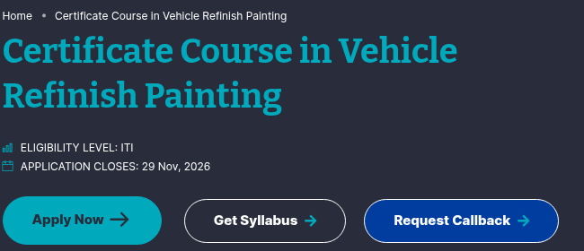

ASAP Thavanur Vehicle Refinish Painting course: no course fee, application deadline 29 November
The official ASAP Kerala course page lists a Certificate Course in Vehicle Refinish Painting at Community Skill Park, Thavanur, Malappuram. It gives 29 November 2026 as the application deadline and 30 November 2026 as the course start date.

Dates, duration and attendance
- Apply by: 29 November 2026. No closing time is stated on the checked page.
- Listed start: 30 November 2026.
- Duration: 144 hours.
- Mode and venue: offline at ASAP Community Skill Park, Thavanur.
- Class hours: 9:30 AM to 4:30 PM, according to the page's FAQ.
These are the organiser's current published details, not a joining confirmation. Ask the centre to confirm your batch, attendance days and timetable before making travel arrangements.
Who is the course for?
The official page's eligibility header says ITI. Its fuller eligibility section says preferably 12th / ITI pass. We preserve that wording rather than promise eligibility to every applicant. Ask the centre to confirm whether your qualification is accepted.
No age range is stated on the official page we checked. This guide does not import an age limit or broader qualification list from local news.
What is free, and what is not promised?
The official page lists INR 0 / no course fee. Its FAQ says students do not pay for tool kits and that training materials are provided free. The same FAQ says ASAP Kerala will not provide accommodation.
Travel, food, stipend and other incidental expenses were not established in this check. Confirm anything you need with the centre. This guide makes no placement, salary or training-quality claims.
What does the syllabus cover?
The official skills list includes painting safety, tools, surface preparation, putty, masking, top coating, polishing and identifying paint defects. These are course topics described by ASAP, not skills or outcomes independently tested by AiCoN.
How to reach the public registration section
- Open the official ASAP course page and check the course title, dates, fee and eligibility.
- Follow Apply Now. In our check it led to the official CSP course page for the same course.
- Read the current course details and registration section. The blank public section displayed full name, mobile number, email, district, an optional referral-code area and centre selection. It listed CSP Thavanur and a November 2026 batch.
- Check the centre and batch before entering your own details. We did not fill any fields or press Register Now, so submission, account requirements after submission, confirmation and admission remain untested.
- If the dates change, registration is unavailable or you need eligibility clarification, contact the centre before proceeding.
Do not send passwords, identity documents or bank details to AiCoN. This access check did not establish the course form's longer-term data retention or sharing terms. Review any notices shown before submitting personal information.
Official centre contact
The course FAQ names Bibina C, 9495999658 and cspthavanoor@asapkerala.gov.in for Community Skill Park, Thavanur, Malappuram.
Ask about current seats, final qualification acceptance, daily attendance, accessibility needs and incidental costs. We did not call the centre, enrol, attend training or test a learner account.
Sources and limits
- ASAP Kerala course page: dates, duration, mode, fee, eligibility wording, topics, FAQ and centre contact. Checked 20 November 2026.
- Official Apply Now destination: public course identity and blank registration-section access. Opened without entering details or submitting.